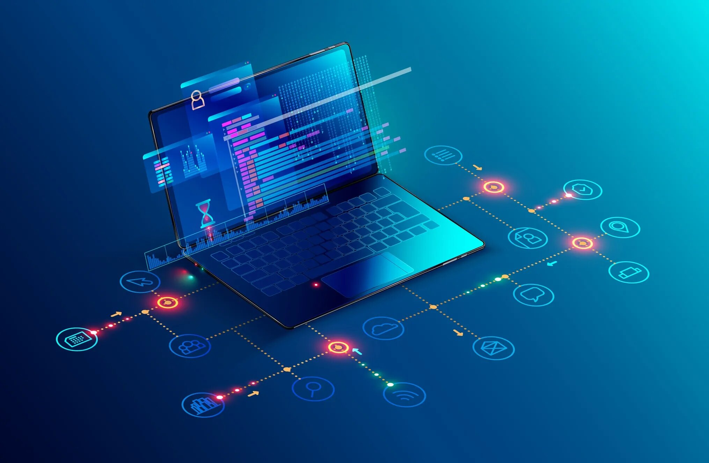

Servicios
- Venta de hardware: venta de equipos informáticos y periféricos, como ordenadores, portátiles, tablets,
impresoras, monitores, teclados, ratones, discos duros, entre otros.
- Venta de software: venta de software, sistemas operativos, suites de ofimática, antivirus, programas de
edición de fotos y vídeos, programas de diseño gráfico, juegos y aplicaciones en general.
- Reparación y mantenimiento: servicios de reparación de hardware y software, diagnóstico y solución de
problemas, cambio de piezas, actualización de software y limpieza de virus y malware.
- Servicios de recuperación de datos: recuperación de datos perdidos debido a fallos en el hardware o
software.
- Servicios de soporte técnico: servicios de soporte técnico a través de teléfono, correo electrónico o chat
para clientes que necesitan ayuda con problemas técnicos.
- Capacitación: cursos de capacitación en informática y tecnología para usuarios y empresas que buscan mejorar
sus habilidades y conocimientos.
